Administrador¶
Criar Eleição¶
Se estiver autenticado e tiver permissões para criar uma eleição, será visível um balão azul no canto superior direito da página principal.
- Clique em Create a New Election.
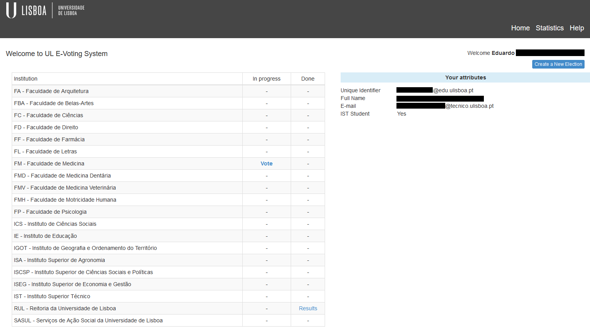
- Preencha o formulário.
- Name (Obrigatório) - Nome da eleição
- Short name (Obrigatório) - Nome que constará no URL da eleição
- Description - Descrição da eleição
- Institution (Obrigatório) - Instituição a ser associada à eleição
- Use voter aliases - As identidades dos eleitores serão substituídas por pseudónimos
- Use advanced audit features - Permite aos eleitores auditarem os votos. Mais informação aqui
- Randomize answer order - Torna a ordem das respostas às questões da eleição aleatória
- Private Election - Apenas utilizadores registados na eleição conseguem aceder a esta
- Help Email Address - Endereço de e-mail a ser contactado pelos eleitores em caso de ajuda
- Election Info Download URL - Link com mais informação acerca da eleição
- Voting starts at - Data e hora do começo da eleição
- Voting ends at - Data e hora do final da eleição
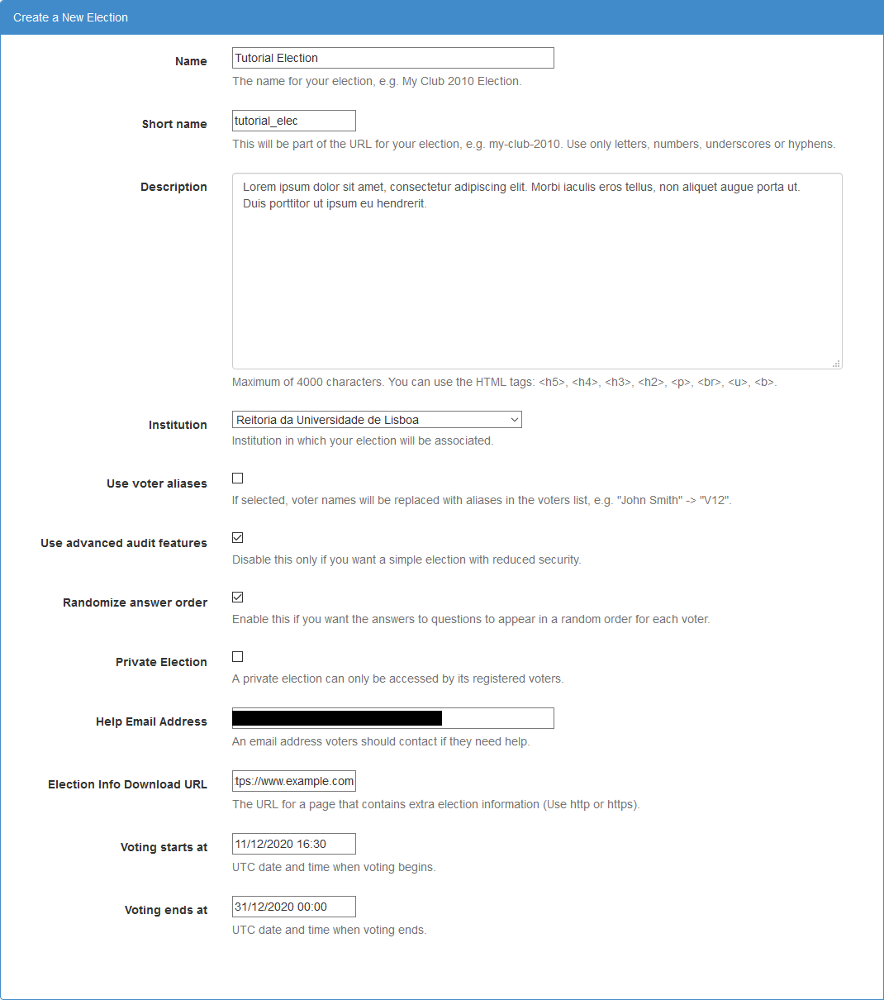
Esta é a página de eleição.
- Na coluna da esquerda encontra-se informação acessível ao utilizador comum.
- Na coluna da direita encontra-se o painel do administrador que o informa qual o próximo passo da eleição, e que também contém algumas ferramentas:
- Edit - Permite editar o formulário de eleição preenchido anteriormente.
- Archive it - Arquiva a eleição, deixando esta de ser acessível exceptuando a quem tenha o link desta, a quem tenha previamente votado nesta e aos administradores. Pode sempre desarquivar a eleição enquanto tiver os privilégios de administrador de eleição.
- Copy - Cria uma cópia da eleição com os mesmos dados inseridos no formulário anterior.
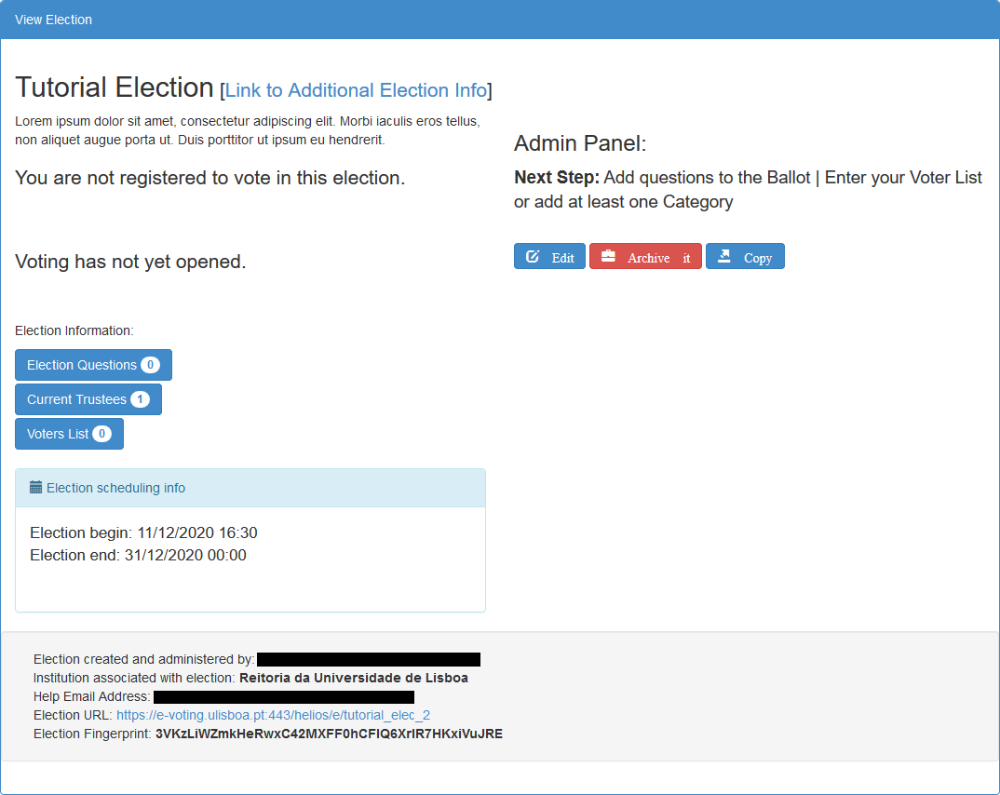
- Existem 3 coisas a fazer antes de iniciar a eleição:
Adicionar Questões¶
Na página da eleição, clique em Election Questions.
- Adicione uma ou mais questões a serem perguntada aos eleitores, juntamente com as respostas a estas.
- Pode especificar o número mínimo e máximo de respostas que o eleitor pode seleccionar.
- Pode adicionar mais opções de resposta clicando em Add 1 more answer.
- Pode também associar um link a cada resposta com mais informação acerca desta.
- Quando tiver uma questão e as suas respostas devidamente preenchidas clique em Add Question.

- Pode adicionar o número de questões que quiser. Todas as questões e respectivas respostas podem ser consultadas, editadas e removidas no topo da página.
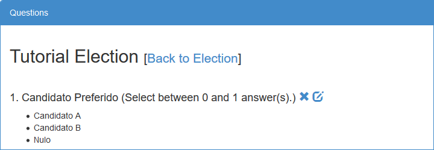
Definir Eleitores¶
Na página da eleição, clique em Voters List.
Existem 2 opções para definir quem é que pode participar na eleição.
- Anyone can vote - Se seleccionar esta opção, qualquer utilizador autenticado pode votar.
- Only specific authenticated users can vote - Apenas alguns utilizadores podem votar. Se seleccionar esta opção, terá ainda de adicionar categorias ou eleitores manualmente.
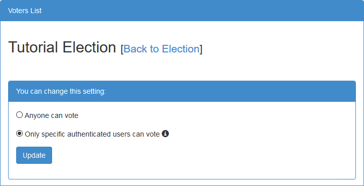
Adicionar uma categoria:
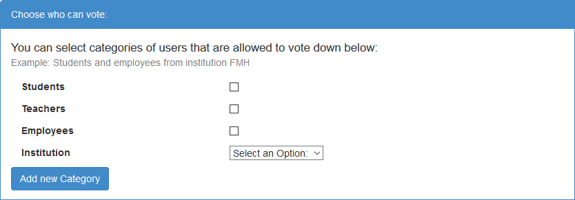
- Uma categoria determina um grupo de utilizadores que está autorizado a votar.
- Um utilizador pode votar se os seus atributos coincidirem com pelo menos 1 das categorias adicionadas. Mais informação sobre atributos.
- Para adicionar uma categoria, terá de seleccionar pelo menos uma das 3 caixas iniciais - Students, Teachers, Employees.
- Opcionalmente poderá restringir ainda mais a categoria, restringindo-a a uma instituição, e subsequentemente a um estabelecimento, direção, área e núcleo.
- Depois basta carregar em Add new Category para adicionar uma nova categoria.
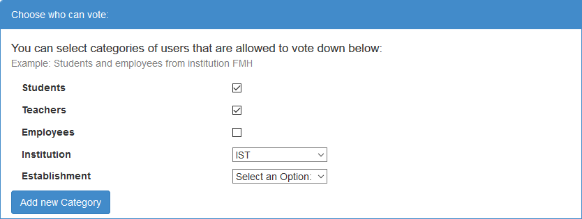
- Pode apagar todas as categorias adicionadas clicando em Delete Categories.
- No exemplo abaixo, podem votar os seguintes utilizadores:
- Alunos e professores da instituição FC (Faculdade de Ciências);
- Empregados da instituição RUL (Reitoria da Universidade de Lisboa), que pertençam ao estabelecimento 'Reitoria' e à direção 'Departamento de Informática';
- Alunos e professores da instituição IST (Instituto Superior Técnico).
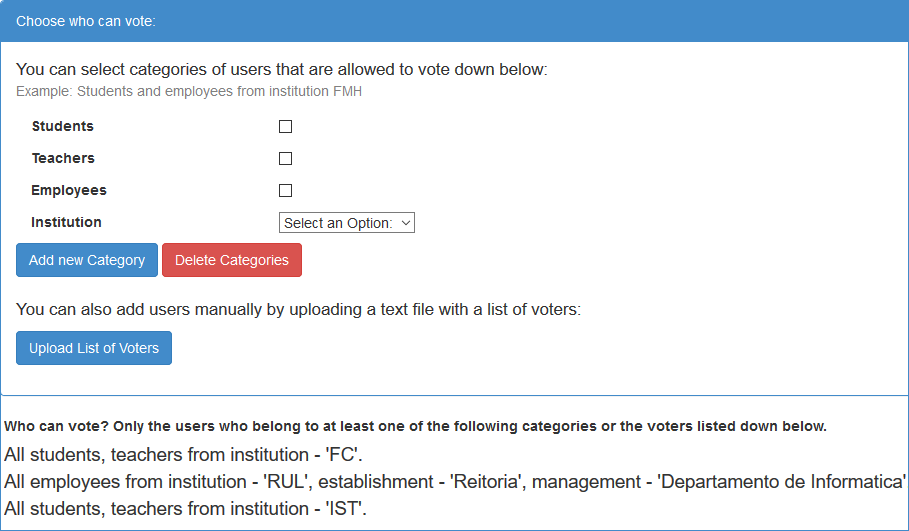
Adicionar eleitores manualmente:
- Clique em Upload List of Voters.
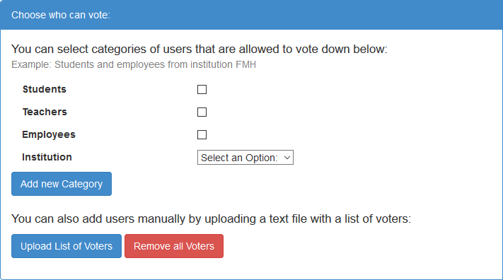
- Aqui pode carregar uma lista de eleitores. Esta lista deverá ser um ficheiro no seu computador, contendo em cada linha o ID, e-mail e Nome de cada eleitor, separados por vírgulas conforme no exemplo, e sem linhas em branco.
- Caso o ficheiro esteja incorrectamente formatado, poderá não ser possível carregá-lo ou este poderá ser carregado incorretamente.
- Para carregar a lista, clique em Browse..., seleccione o ficheiro com a lista de eleitores, e carregue em Upload.
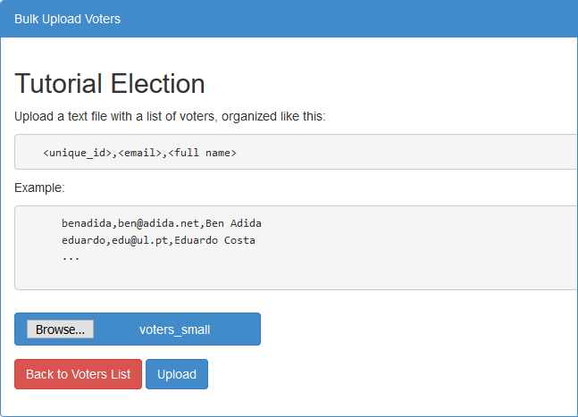
- Antes de carregar a lista pode verificar as primeiras entradas desta para detetar algo de errado.
- Se tudo parecer bem, clique em Yes, upload voters list. Caso queira alterar a lista, clique em No, cancel.
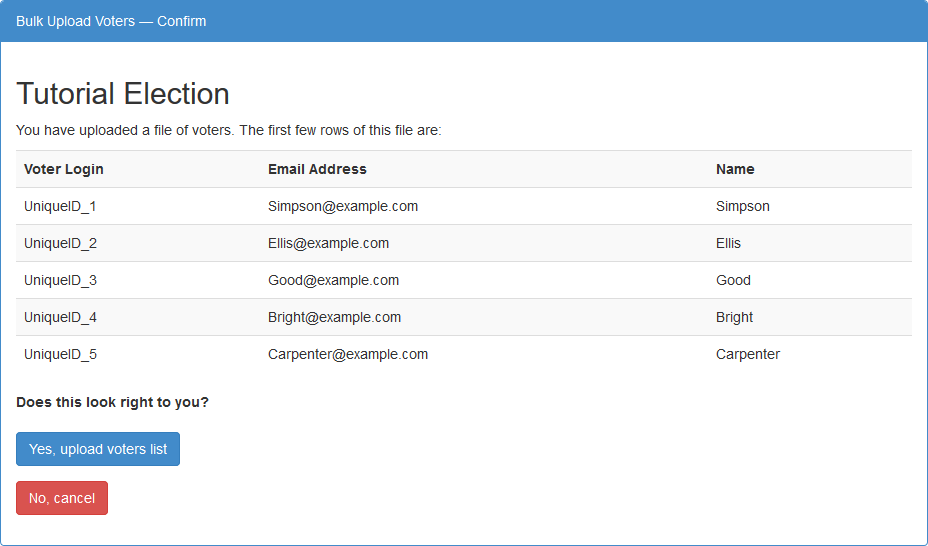
- Após carregar a lista, encontrará a list dos eleitores carregados debaixo da lista de categorias adicionadas.
- Esta lista poderá demorar algum tempo a carregar. Espere alguns minutos e atualize a página. Se na parte inferior da página Prior Bulk Uploads se mantiver uma mensagem de loading, tente de novo carregar a lista ou contacte o administrador se o problema persistir.
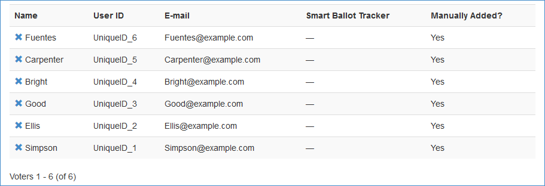
- Pode eliminar um eleitor específico que tenha sido carregado manualmente clicando na cruz à esquerda no nome deste (desde que ainda não tenha congelado a eleição).
- Também pode eliminar todos os eleitores carregados manualmente clicando em Remove all Voters (desde que ainda não tenha congelado a eleição).
Adicionar Trustees¶
Na página da eleição, clique em Current Trustees.
Por definição todas as eleições começam com um trustee - o sistema Helios. Para tornar a sua eleição mais segura, é aconselhável adicionar também trustees humanos. É altamente aconselhável que a sua eleição tenha pelo menos 2 trustees, para garantir a integridade desta. As eleições só poderão ser abertas quando todos os trustees enviarem a sua chave pública para o servidor. Do mesmo modo, os resultados da eleição só poderão ser calculados quando todos os trustees enviarem a sua desencriptação parcial.
- Clique em Add a Human Trustee.
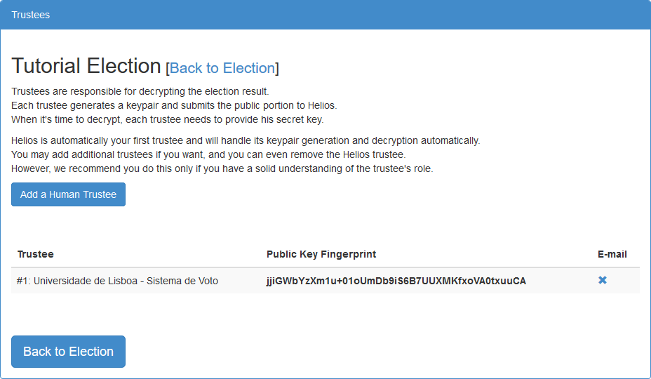
- Seleccione o User ID do utilizador a ser adicionado como trustee. Nota: Este utilizador tem de previamente efetuar a autenticação para aparecer na lista.
- [Opcional] Escreva o e-mail do utilizador. Caso deixe este campo em branco, será utilizado o email associado à conta do utilizador.
- Clique em Add Trustee.
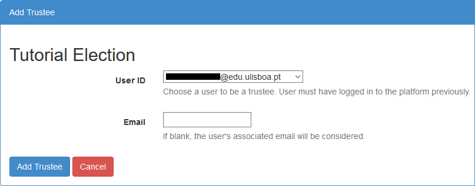
- Aparecerá uma nova entrada na tabela com o novo trustee.
- Agora o trustee terá de carregar a sua chave pública para o servidor.
- Para isso, envie-lhe um e-mail carregando no ícone de envelope ao lado do seu endereço electrónico. Este e-mail informará que o utilizador foi escolhido como trustee, e contém passos para o guiar a submeter a sua chave pública. Este ícone desaparecerá quando o trustee submeter a sua chave pública.
- Pode remover um trustee carregando na cruz presente no campo de E-mail deste.
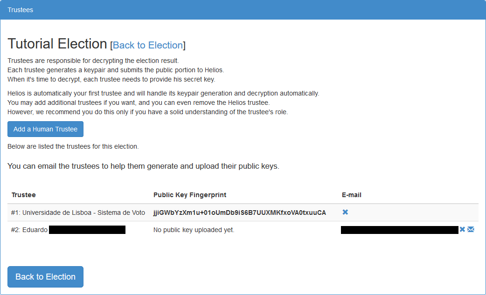
Iniciar Eleição¶
Para iniciar uma eleição, terá de lhe aparecer o passo Freeze the Ballot and open Election. Caso contrário, efetue os passos indicados primeiro, como descrito em Criar Eleição ou em Próximo Passo. Após congelar uma eleição, não será mais possível editá-la. A votação abrirá ao tempo estipulado de abertura, ou no caso de não haver um tempo estipulado, abrirá imediatamente. Pode também pré-visualizar a cabine de votação clicando em Preview Booth.
- Clique em Freeze the Ballot and open Election.
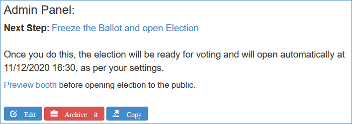
- Clique em Freeze the ballot e de seguinda em OK.
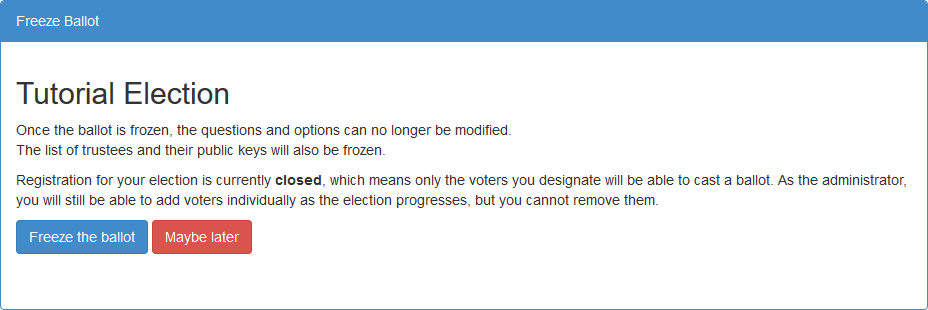
- A eleição está congelada. Irá iniciar no tempo estipulado de abertura, ou na ausência deste, imediatamente.
Terminar Eleição¶
Para terminar uma eleição, terá de se calcular a contagem, desencriptá-la e contar os votos. Não será possível a nenhum eleitor votar ou alterar o seu voto após isto.
- Clique em Compute encrypted tally.
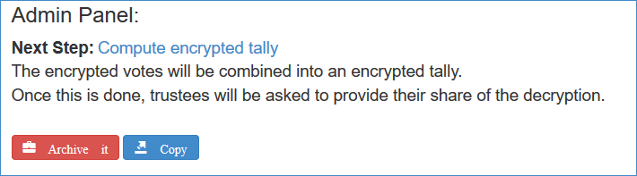
- Clique de novo em Compute Encrypted Tally e depois em OK.
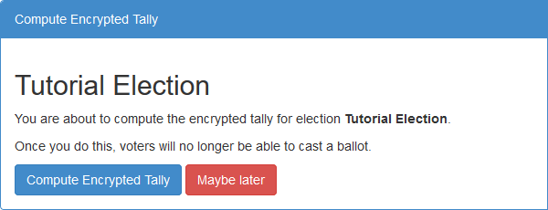
- Se tiver adicionado trustees à eleição, é necessário que eles enviem os seus factores de desencriptação.
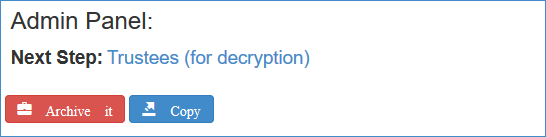
- Para tal, clique em Current Trustees e carregue nos ícones de envelope ao lado dos seus endereços electrónicos. Isto enviar-lhes-à um e-mail a informá-los de tal e contém passos para os guiar a submeter os factores de desencriptação. O ícone de envelope desaparecerá quando o trustee submeter os seus factores de desencriptação.
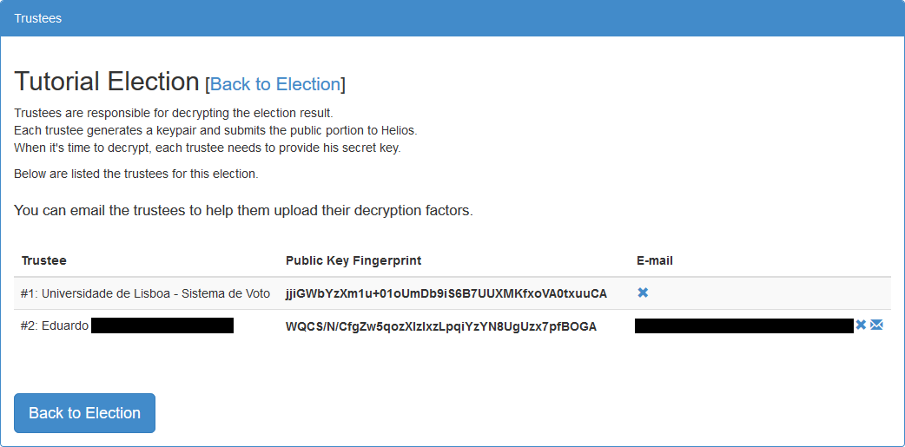
- Após os trustees terem enviado as suas desencriptações, clique em Compute Results ou Combine trustee decryptions and compute results.
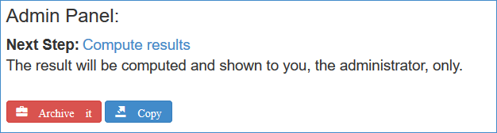
- Clique em compute the tally!
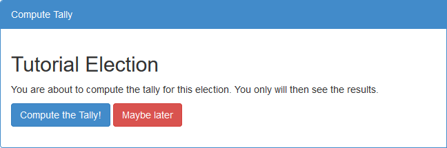
- Aqui poderá ver o resultado da eleição. Contudo, o público ainda não o consegue ver. Para o disponibilizar ao público, clique em Release result.
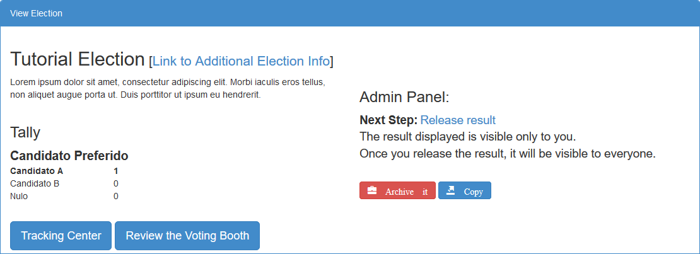
- Seleccione a caixinha caso queira enviar e-mail aos eleitores acerca do resultado da eleição (mais informação em Enviar Emails), e clique em Release Result.
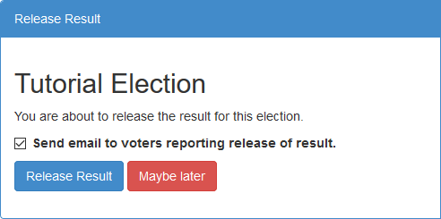
- A eleição terminou. Pode verificar a contagem dos votos como explicado em Verificar Resultados.
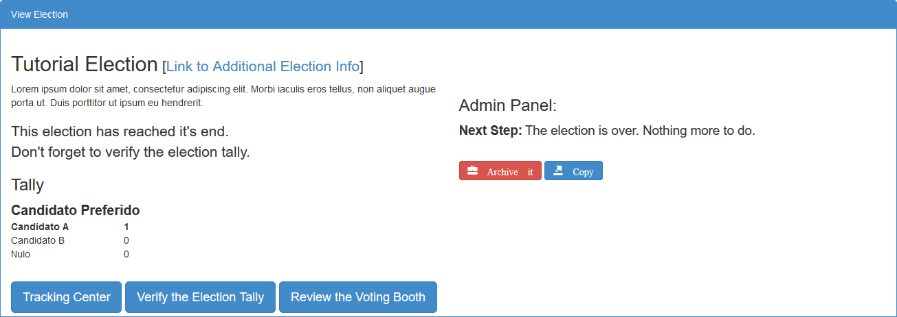
Próximo Passo¶
Durante o decorrer da eleição, aparecerão vários passos para o guiar no seu painel de administrador.
- Add questions to the Ballot - Adicionar questões a serem perguntadas aos eleitores
- Add at least one Trustee - Adicionar pelo menos 1 trustee à eleição
- Have Trustee generate a Keypair - É necessário a geração do par de chaves por um dos trustees. Caso ainda não o tenha feito, envie-lhe um e-mail como descrito em Adicionar Trustees.
- Enter your Voter List - Adicione pelo menos 1 categoria ou carregue uma lista de eleitores conforme descrito em Definir Eleitores.
- Freeze the Ballot and open Election - Congelar a eleição. Não será mais possível editá-la após isto. A votação abrirá ao tempo estipulado de abertura, ou no caso de não haver um tempo estipulado, abrirá imediatamente.
- Compute encrypted tally - Terminar a fase de votação e passar à contagem dos votos. Não será possível a nenhum eleitor votar ou alterar o seu voto.
- Tally computation is under way. Reload this page in a couple of minutes. - Aguarde uns minutos enquanto a contagem é obtida.
- Trustees (for decryption) - É necessário o envio das desencriptações parciais dos trustees. Envie-lhes um e-mail a informar conforme descrito em Adicionar Trustees.
- Compute results ou Combine trustee decryptions and compute results - Obter a contagem dos votos, sem a disponibilizar ao público.
- Release result - Lançar o resultado ao público.
- The election is over. Nothing more to do. - Eleição terminada.
Prolongar a Eleição¶
Pode prolongar a eleição no menu Election scheduling info, clicando em Extend voting.
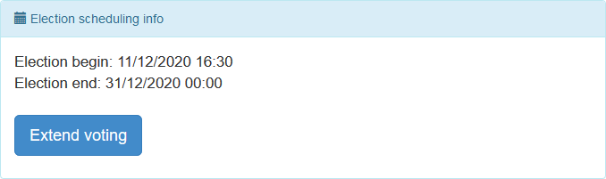
Enviar Emails¶
Se desejar enviar um e-mail a um trustee, siga os passos em Adicionar Trustees ou Terminar Eleição. Caso queira enviar e-mail a eleitores, siga os passos abaixo.
-
Na página da eleição, clique em Voters List.
-
Pode enviar um e-mail para todos os eleitores especificados na lista de eleitores abaixo clicando em Send email to voters below, ou um e-mail a apenas um eleitor, carregando no envelope à esquerda do seu nome.
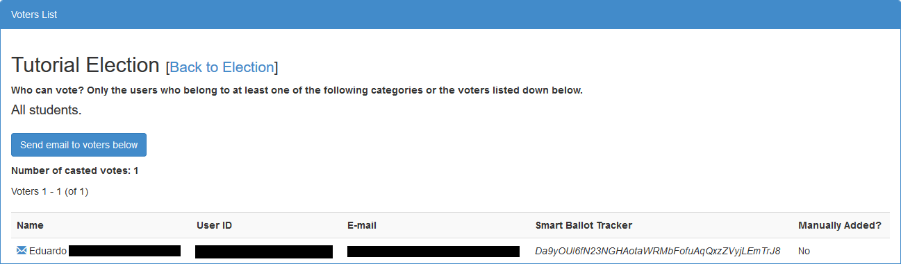
- Escolha um dos 4 templates de e-mail.
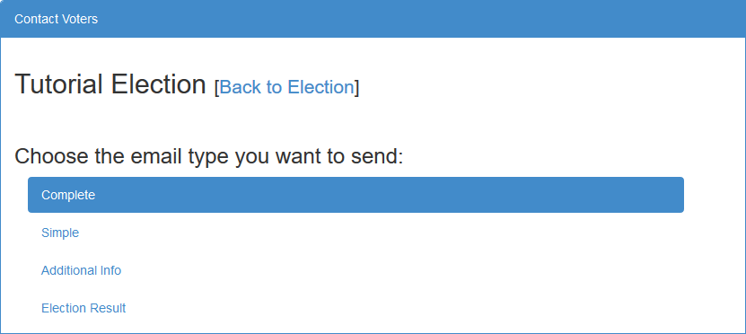
- Escreva o assunto do e-mail e adicione algum texto no body se assim o pretender.
- Caso seja um e-mail enviado em massa, também pode escolher entre enviar o e-mail para todos os eleitores, apenas para eleitores que já votaram ou apenas para eleitores que ainda não votaram.
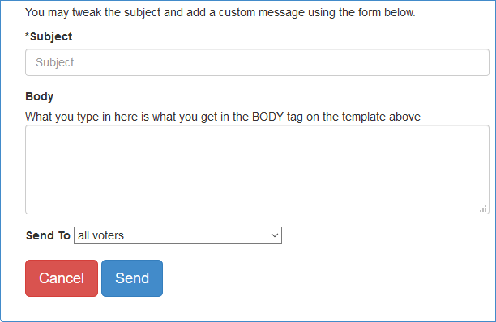
Consultar as suas Eleições¶
As suas eleições podem ser consultadas na página principal, do lado direito.
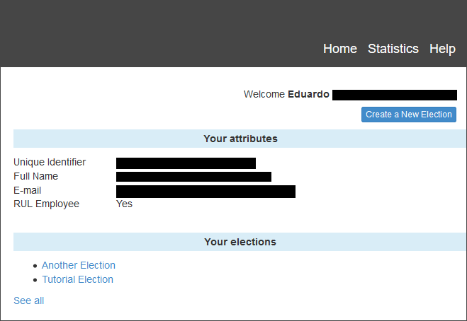
Estatísticas¶
- Clique em Statistics, no topo superior direito da página principal.
- Aqui terá 3 sub-menus. Também é possível ver o número de votos que se encontram em fila e forçar o depósito destes na urna.
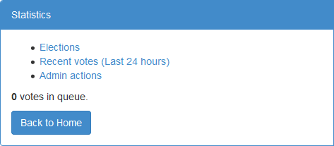
- Elections - Contém uma lista de todas as eleições da plataforma de voto.
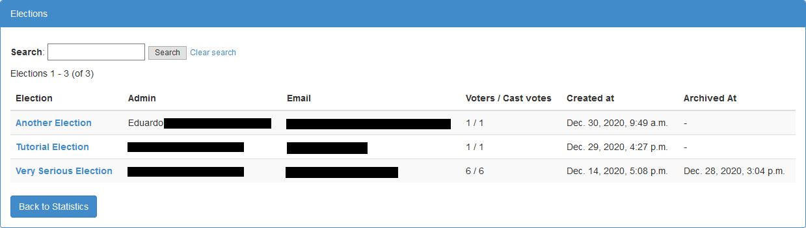
- Recent votes - Contém uma lista de eleições nas quais houveram votos depositados nas última 24 horas (eleições ativas).
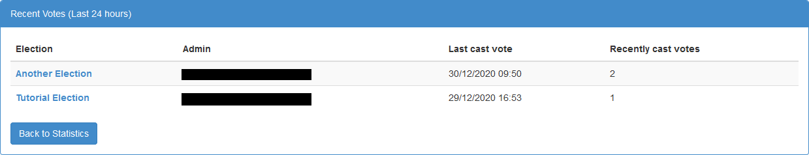
- Admin Actions - Contém uma lista de ações de administradores, nomeadamente a remoção de eleitores manualmente carregados previamente.
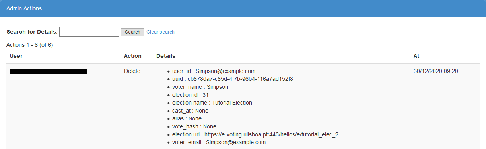
Dar/remover privilégios de Administrador de Eleição¶
Se puder dar e remover privilégios de administrador de eleição, terá essa opção acessível no canto superior direito da página principal.
- Clique em Add/Remove an Election Admin.
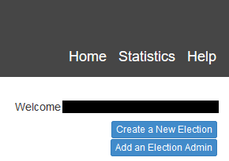
Aqui terá 2 painéis secundários, o primeiro (Give Election Administrator Privileges) com a opção de dar privilégios, e o segundo (Revoke Election Administrator Privileges) com opção de os remover.
-
Para dar privilégios de administrador de eleição:
- Escolha da lista do 1º painel o utilizador a quem devem ser dados esses privilégios, assim como a data a que estes devem expirar e clique em Submit.
- O utilizador tem de se ter autenticado previamente na plafaforma.
- Nota: se os privilégios expirarem a meio de uma eleição, estes terão de ser dados de novo para o administrador desta puder lançar os resultados.
-
Para remover privilégios de administrador de eleição:
- Escolha da lista do 2º painel o utilizador a quem devem ser retirados esses privilégios e clique em Submit.
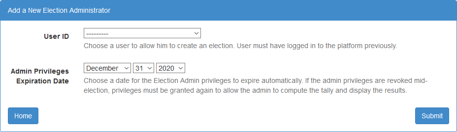